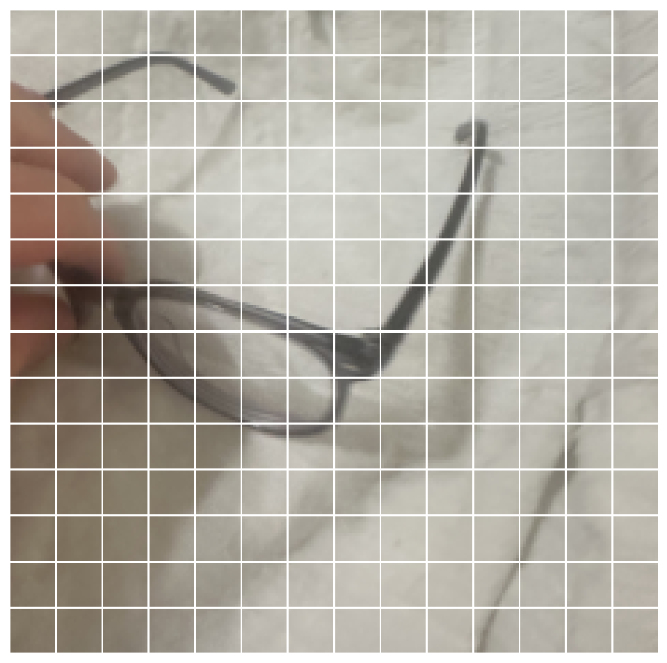
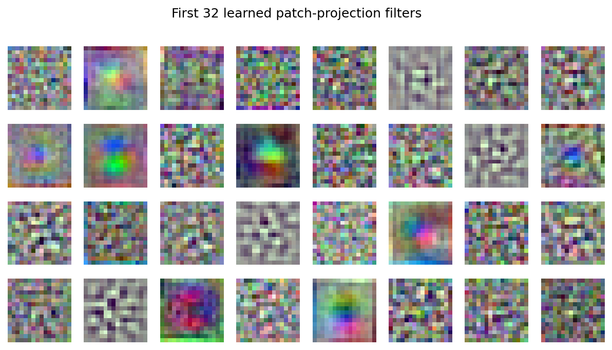
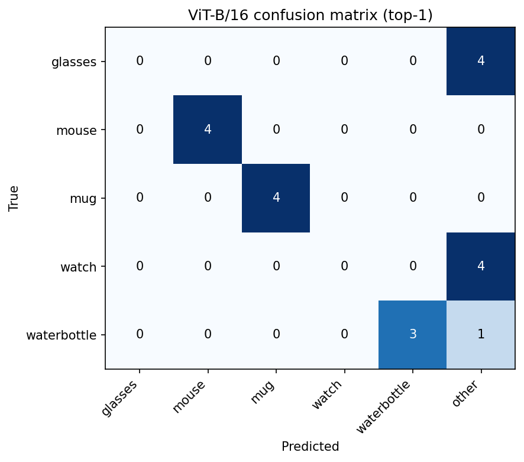
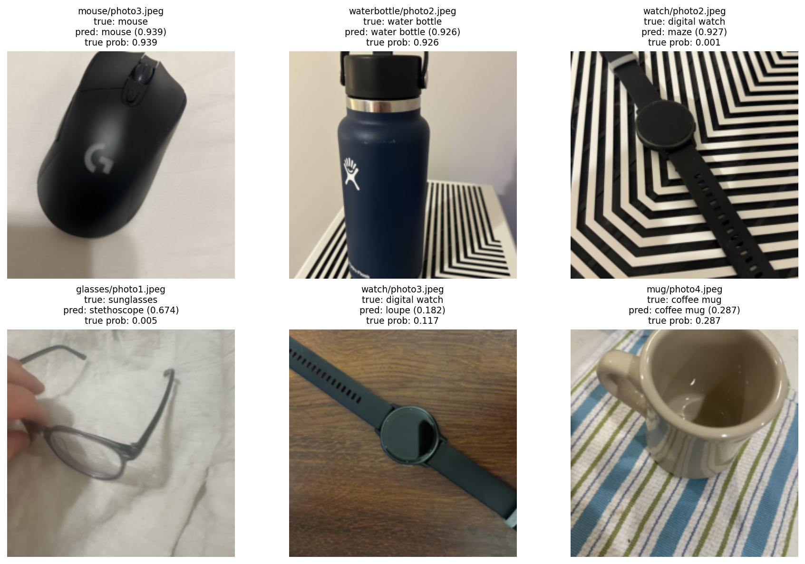
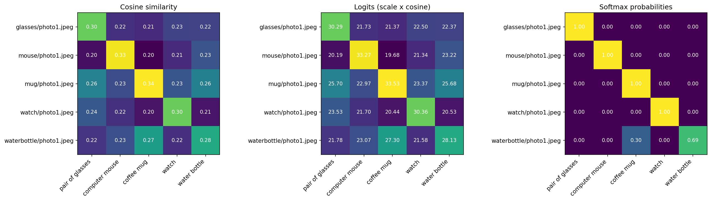
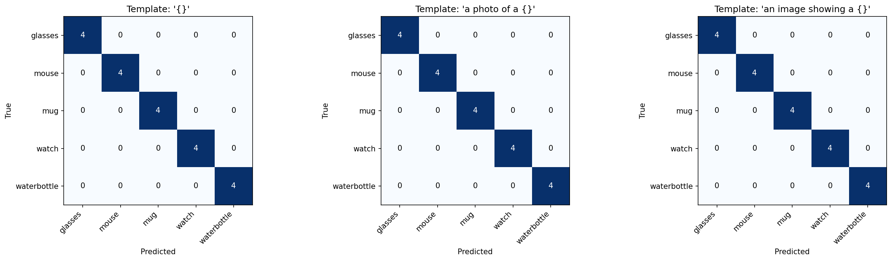
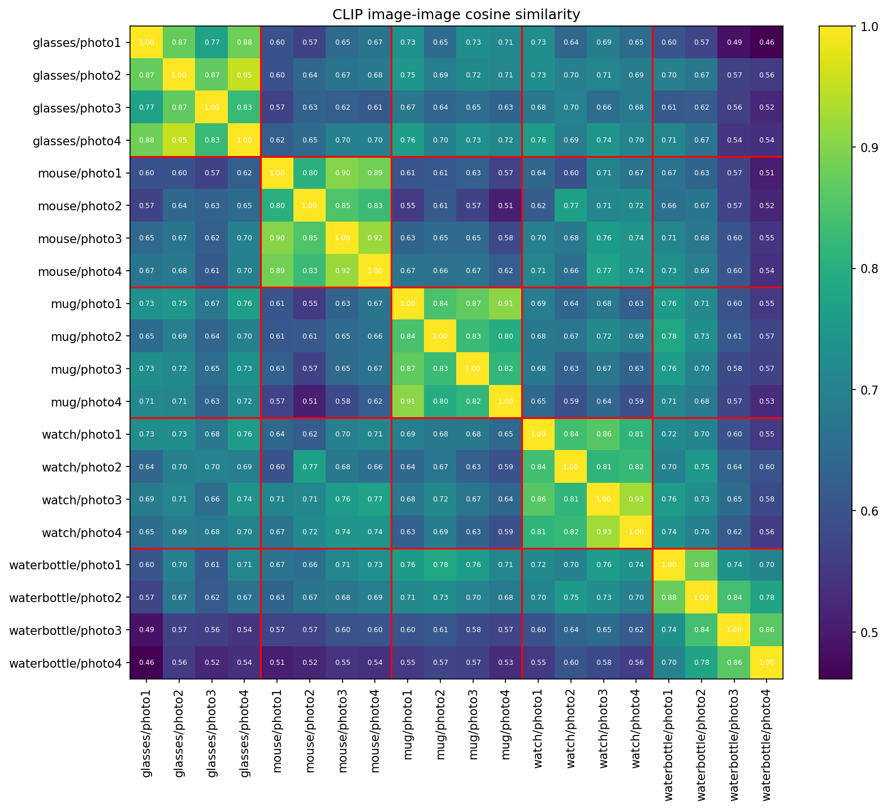
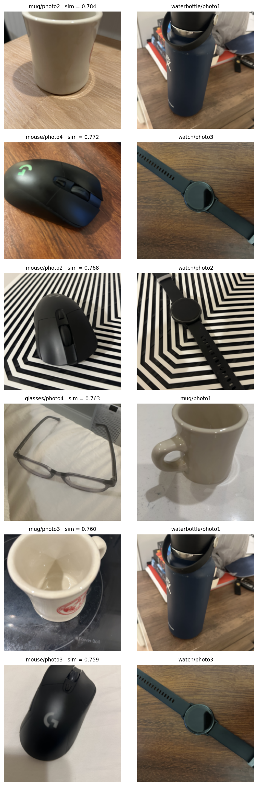

Bryson
Google Colab, CPU. Python 3.13.16, torch 2.11.0, torchvision 0.26.0.
Part 1: torchvision vit_b_16 with ViT_B_16_Weights.IMAGENET1K_V1. Preprocessing from weights.transforms(): resize to 256, center crop 224, ImageNet normalization.
Part 2: OpenAI CLIP ViT-B/32 (float32). Preprocessing from clip.load: resize to 224 (bicubic), center crop 224, CLIP normalization. Image embeddings were saved to a .npy file.
20 photos I took with my phone, 4 per category. Label mapping: glasses = sunglasses (837), mouse = mouse (673), mug = coffee mug (504), watch = digital watch (531), water bottle = water bottle (898). ImageNet has no eyeglasses or smartwatch class, so glasses and watch use the closest labels.
A 224 x 224 image with 16 x 16 patches gives 196 patches. With the CLS token the sequence length is 197.

Patch projection: a learned linear layer (Conv2d, kernel 16, stride 16) that turns each patch's 768 pixel values into a 768-dimensional embedding.
Positional embeddings: learned vectors added to each token so the model knows where each patch came from, since attention alone has no sense of position.
CLS token: an extra learned token at the front of the sequence. It collects information from all patches through attention, and its output is used for classification.
My patch function only cuts the image into raw pixel squares. The model's patch projection is learned and turns each patch into features. The figure below shows some of its learned filters.

Top-1 accuracy: 11/20 (55%).
| Image | Top 1 | Top 2 | Top 3 | Top 4 | Top 5 |
|---|---|---|---|---|---|
| glasses 1 | stethoscope 0.674 | lab coat 0.070 | knot 0.031 | fur coat 0.018 | sunglasses 0.005 |
| glasses 2 | stethoscope 0.525 | notebook 0.077 | cradle 0.022 | iPod 0.017 | laptop 0.017 |
| glasses 3 | sock 0.159 | sunglasses 0.088 | stethoscope 0.085 | park bench 0.048 | loupe 0.041 |
| glasses 4 | cassette 0.428 | spotlight 0.066 | loupe 0.054 | stethoscope 0.050 | cassette player 0.027 |
| mouse 1 | mouse 0.846 | mousetrap 0.009 | computer keyboard 0.001 | space bar 0.001 | buckle 0.001 |
| mouse 2 | mouse 0.838 | maze 0.017 | joystick 0.015 | switch 0.010 | computer keyboard 0.002 |
| mouse 3 | mouse 0.939 | mousetrap 0.003 | hook 0.001 | punching bag 0.001 | buckle 0.001 |
| mouse 4 | mouse 0.842 | mousetrap 0.010 | computer keyboard 0.004 | joystick 0.004 | switch 0.001 |
| mug 1 | coffee mug 0.679 | cup 0.086 | whiskey jug 0.049 | espresso 0.030 | consomme 0.017 |
| mug 2 | coffee mug 0.537 | cup 0.308 | espresso 0.019 | pot 0.006 | vase 0.004 |
| mug 3 | coffee mug 0.356 | bucket 0.206 | cup 0.169 | espresso 0.027 | soup bowl 0.016 |
| mug 4 | coffee mug 0.287 | teapot 0.239 | cup 0.118 | coffeepot 0.097 | pitcher 0.044 |
| watch 1 | scabbard 0.610 | letter opener 0.063 | assault rifle 0.027 | spatula 0.014 | snorkel 0.010 |
| watch 2 | maze 0.927 | joystick 0.003 | analog clock 0.003 | umbrella 0.001 | cleaver 0.001 |
| watch 3 | loupe 0.182 | digital watch 0.117 | spatula 0.082 | letter opener 0.066 | ladle 0.035 |
| watch 4 | loupe 0.585 | scabbard 0.059 | letter opener 0.053 | fountain pen 0.025 | hammer 0.016 |
| water bottle 1 | projectile 0.579 | missile 0.119 | ashcan 0.033 | punching bag 0.022 | water bottle 0.013 |
| water bottle 2 | water bottle 0.926 | water jug 0.049 | coffeepot 0.002 | coffee mug 0.001 | pill bottle 0.001 |
| water bottle 3 | water bottle 0.829 | coffee mug 0.022 | lighter 0.021 | water jug 0.017 | hair spray 0.008 |
| water bottle 4 | water bottle 0.444 | lighter 0.255 | microphone 0.029 | water jug 0.015 | punching bag 0.008 |
Confusion matrix ("other" means a label outside my 5 categories):


Successes: mouse 3 (0.939) is a single object on a plain background. Water bottle 2 (0.926) is on a striped surface, but the bottle fills most of the frame.
Incorrect: watch 2 was called a maze (0.927) because the zigzag background covers most of the image. Glasses 1 was called a stethoscope (0.674) because the thin curved frame looks like tubing, and ImageNet has no eyeglasses class.
Uncertain: watch 3 had low confidence (loupe 0.182, digital watch 0.117) because the crop is mostly the band. Mug 4 was correct but only 0.287, since the top-down view also looks like a teapot or cup.
Fixed categories: the model can only pick from 1,000 labels. If the object is not on the list, like my eyeglasses, it cannot say so and picks the closest label instead. I also cannot ask it anything other than which label fits, and adding a new class would require retraining.
I L2-normalized the image and text embeddings, computed cosine similarity as image @ text.T, multiplied by the learned scale (100) to get logits, and applied softmax over the 5 prompts. The max difference from CLIP's built-in logits was 1.5e-5, which is float32 rounding. Accuracy with "a photo of a {}" was 20/20.

Cosine similarities are all close together (0.20 to 0.34). Logits are cosine x 100, which spreads out the gaps. Softmax turns the logits into probabilities that sum to 1, so a small gap becomes almost 1.00 vs 0.00.
Softmax depends on the candidates because it only compares the texts it is given. For watch 3, removing the "watch" prompt made "pair of glasses" jump from 0.01 to 0.61, even though its cosine similarity (0.24) did not change.

All three templates ("{}", "a photo of a {}", "an image showing a {}") got 20/20, so no prediction changed. The scores did change. Water bottle 1 had 0.851, 0.691, and 0.881. Watch 3 went from 0.869 with the bare word to about 0.985 with either sentence.
Changing a prompt only changes the text input. The model weights and the image embeddings stay the same. Fine-tuning would change the weights.
Compared to Part 1: ViT got 55% choosing from 1,000 classes, but 95% when restricted to my 5 classes. CLIP got 100% with 5 prompts. Most of the gap comes from the number of candidates, and CLIP also got the real names like "pair of glasses". The models have different training data and objectives, and 20 images is too small to say one is better.

Average similarity within a category was 0.843, and across categories it was 0.651, so images group mostly by object.

The most similar pairs across categories shared other things: mouse 2 and watch 2 have the same zigzag background, mouse 4 and watch 3 are both black objects on the same wood table, glasses 4 and mug 1 are both bright white scenes, and the mugs and water bottle are all drinkware.
So CLIP mainly captures the object, but background, color, lighting, and object type also affect the similarity.